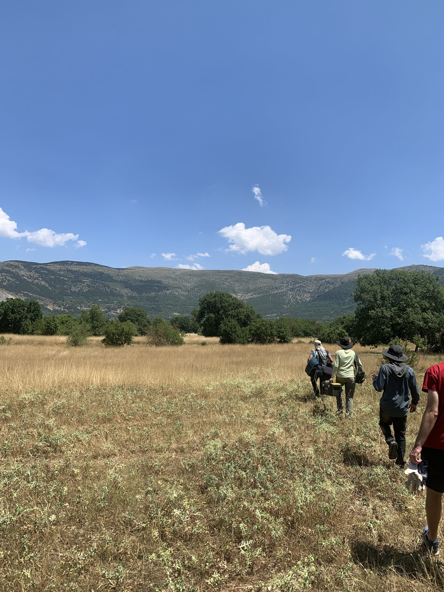

Excavation · Survey · Documentation
Archaeological fieldwork
Working across prehistoric, Roman, and medieval contexts in central and northern Italy.
Cervia Vecchia
University of Bologna · June–July 2025
I conducted stratigraphic excavation, artifact recovery and cataloguing, and drawn and photographic documentation. My work contributed to identifying the eastern extent of a defensive wall and supported public outreach.

Roman salvage campaign
Lecce nei Marsi · August 2024
I assisted with the emergency excavation of three Roman-era tile-covered burials discovered during pipeline construction, recovering and cataloguing human remains and preparing material for transfer to the Italian Ministry of Culture.

Neolithic excavation
University of Pisa · July–August 2024
At an early central Italian Neolithic settlement, I excavated faunal remains, microliths, botanical materials, pottery, and ochre. Methods included total station survey, 3D scanning, photographic recording, screening, and flotation.
